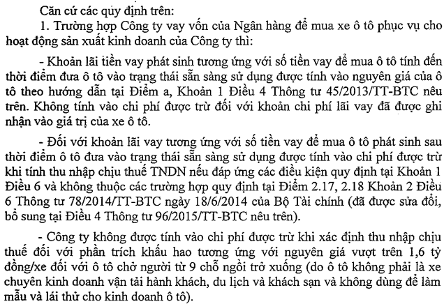
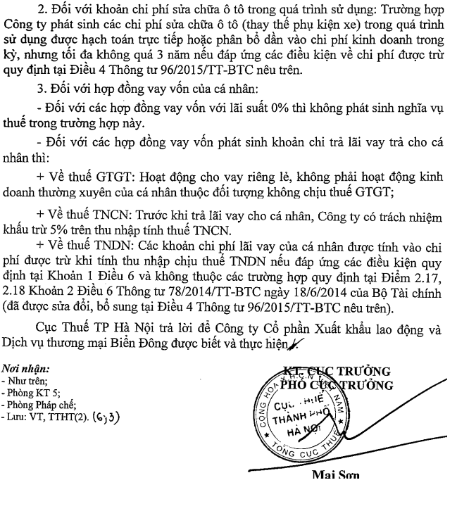

Chi phí lãi vay mua sắm tải sản cố định (Ô tô...) được đưa vào nguyên giá của TSCĐ tính đến thời điểm đưa TSCĐ vào trạng thái sẵn sàng sử dụng, sau thời điểm này sẽ đưa vào chi phí.
Theo điểm a khoản 1 điều 4 Thông tư 45/2013/TT-BTC của Bộ tài chính quy định về TSCĐ thì:
“Nguyên giá TSCĐ hữu hình mua sắm (kể cả mua mới và cũ): là giá mua thực tế phải trả cộng (+) các khoản thuế (không bao gồm các khoản thuế được hoàn lại), các chi phí liên quan trực tiếp phải chi ra tính đến thời điểm đưa tài sản cố định vào trạng thái sẵn sàng sử dụng như: lãi tiền vay phát sinh trong quá trình đầu tư mua sắm tài sản cố định; chi phí vận chuyển, bốc dỡ; chi phí nâng cấp; chi phí lắp đặt, chạy thử; lệ phí trước bạ và các chi phí liên quan trực tiếp khác.”
Theo điều 10 của Nghị định 320/2025/NĐ-CP hướng dẫn Luật Thuế thu nhập doanh nghiệp thì:
Điều 10. Các khoản chi không được trừ khi xác định thu nhập chịu thuế
Điều 10. Các khoản chi không được trừ khi xác định thu nhập chịu thuế
9. Chi trả lãi tiền vay tương ứng với phần vốn điều lệ (đối với doanh nghiệp tư nhân là vốn đầu tư) đã đăng ký còn thiếu theo tiến độ góp vốn ghi trong điều lệ của doanh nghiệp nhưng tiến độ góp vốn tối đa không được vượt quá thời hạn góp vốn theo quy định của Luật Doanh nghiệp kể cả trường hợp doanh nghiệp đã đi vào sản xuất kinh doanh; chi trả lãi tiền vay trong quá trình đầu tư đã được ghi nhận vào giá trị của tài sản, giá trị công trình đầu tư.
a) Trường hợp doanh nghiệp đã góp đủ vốn điều lệ, trong quá trình kinh doanh có khoản chi trả lãi tiền vay để đầu tư vào doanh nghiệp khác thì khoản chi này được tính vào chi phí được trừ khi xác định thu nhập chịu thuế;
b) Chi trả lãi tiền vay tương ứng với vốn điều lệ còn thiếu theo tiến độ góp vốn ghi trong điều lệ của doanh nghiệp nhưng tiến độ góp vốn tối đa không được vượt quá thời hạn góp vốn theo quy định của Luật Doanh nghiệp không được trừ khi xác định thu nhập chịu thuế được xác định như sau:
b1) Trường hợp số tiền vay nhỏ hơn hoặc bằng số vốn điều lệ còn thiếu thì toàn bộ lãi tiền vay là khoản chi không được trừ;
b2) Trường hợp số tiền vay lớn hơn số vốn điều lệ còn thiếu theo tiến độ góp vốn thì xác định như sau: Nếu doanh nghiệp phát sinh nhiều khoản vay thì khoản chi trả lãi tiền vay không được trừ bằng tỷ lệ (%) giữa vốn điều lệ còn thiếu trên tổng số tiền vay nhân với tổng số lãi vay; nếu doanh nghiệp chỉ phát sinh một khoản vay thì khoản chi trả lãi tiền vay không được trừ bằng số vốn điều lệ còn thiếu nhân với lãi suất của khoản vay nhân với thời gian góp vốn điều lệ còn thiếu.
10. Phần chi phí trả lãi tiền vay vốn sản xuất kinh doanh của đối tượng không phải là tổ chức tín dụng vượt quá mức quy định tại Bộ luật Dân sự.
18. Chi về đầu tư xây dựng cơ bản trong giai đoạn đầu tư để hình thành tài sản cố định.
a) Khi bắt đầu hoạt động sản xuất, kinh doanh, doanh nghiệp chưa phát sinh doanh thu nhưng có phát sinh các khoản chi thường xuyên để duy trì hoạt động sản xuất, kinh doanh của doanh nghiệp (không phải là các khoản chi đầu tư xây dựng để hình thành tài sản cố định) mà các khoản chi này đáp ứng các điều kiện theo quy định thì khoản chi này được tính vào chi phí được trừ khi xác định thu nhập chịu thuế;
b) Trường hợp trong giai đoạn đầu tư, doanh nghiệp có phát sinh khoản chi trả tiền vay thì khoản chi này được tính vào giá trị đầu tư. Trường hợp trong giai đoạn đầu tư xây dựng cơ bản, doanh nghiệp phát sinh cả khoản chi trả lãi tiền vay và thu từ lãi tiền gửi thì được bù trừ giữa khoản chi trả lãi tiền vay và thu từ lãi tiền gửi, sau khi bù trừ phần chênh lệch còn lại ghi giảm giá trị đầu tư.
==================================

Điều kiện để chi phí lãi vay hợp lý xem thêm: Chi phí lãi vay hợp lý
- Trường hợp mua xe ô tô > 1,6 tỷ (mà ô tô đó không phải là xe chuyên kinh doanh vận tải hành khách, du lịch và khách sạn, không dùng để làm mẫu, lãi thử cho kinh doanh ô tô) thì cách xử lý xem tại đây:
Cũng theo Công văn 40684/CT-TTHT ngày 16/6/2017 của cục thuế TP. Hà Nội

Kế toán Diệu Tâm xin chúc các bạn thành công!